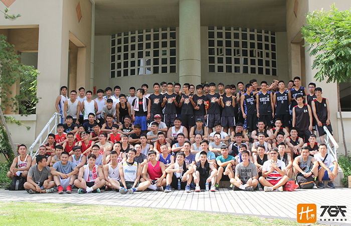

貼文時間：2017/09/08

位於台中市大里區，舊名國立大里高中，長久以來即是著名的升學學校，近年來由於學校體育教師群推動校內運動風氣有成，使得校園運動人口倍增，更有鑑於大學升學管道多元、及學生強烈的參與動機，在2016年暑假由體育組吳政穎老師帶領，開啟了興大附中籃球隊歷史的第一章……。
興大附中在過去並沒有成立籃球隊，僅以社團的性質存在，也沒有對外參加任何正式盃賽及高中聯賽，因此至105學年度開學後，在學務主任吳政融、 體育組長游斯徨、吳政穎老師和新進體育教師陳豪偉的帶領及協助下，球隊正式開始運作，更在陳勇延校長及各處室師長的大力支持下，球隊於該學年度首度參與台中市聯賽、市長盃、高中聯賽……；興大附中的練習時間為每天放學後的一小時，相較同區的勁旅，練習時間是較為不足的，也因此球隊會利用假日及課餘時間與他校代表隊進行對抗交流，增加實戰經驗，培養團隊默契，針對不足的地方加強，全力以赴為準備每個盃賽。
興大附中球隊除了專業籃球訓練外，亦要求學業成績，並以個人品德及禮貌為優先，強調友愛同學、尊敬師長、學術並重、允文允武的表現。
教練陳豪偉表示，興大附中屬於升學學校，國中會考成績須達5A以上，在這樣的學科成績要求下，很難吸收到有底子的國中生，隊長每一位球員都是從零開始，也因為如此，我們的球員是一張白紙，能盡力的去吸收去領悟，加上有心學習，能夠有明顯的進步，我常提醒學生必須再訓練及學業取得平衡，做好時間管理，別忘了自己的本分是學生，而最欣慰的是，今年全程參與訓練及比賽的六位學生，通通錄取國立大學，其中場均15分的主力戰將林崇峻，以69級分錄取台灣大學土木系，實屬不易，也期許每個隊員能做到允文允武。
興大附中的球風講求團隊，訓練上強調防守及基本動作，針對每個環節嚴格要求，進攻以motion製作出手機會，防守則採壓迫及區域聯防為主。
在105學年度首度參加台中市長盃及聯賽，陳教練說道，即使是首度參賽，球隊每場比賽都能和對手拉鋸，即便輸球分差也在個位數內，由於球員過去缺乏大型比賽經驗，臨場的穩定型仍是主要需加強的，但希望球員從比賽中體會永不放棄的精神，展現頑強的鬥志及韌性。
談及最有印象的比賽，陳教練笑著說，是今年市長盃以六分差擊敗衛冕軍僑泰中學，除了打出隊型以外，對一個從無到有的球隊，信心部分的提升是顯著的，最終球隊拿下第二名的佳績。
興大附中與於近年暑假舉辦校友盃盛事，邀請過去社團性質的學長們回到母校，今年廣招近兩百位校友與校長、主任、組長、教師們一同共襄盛舉，藉由學長學弟間的比賽交流，傳遞故事，延續精神，提升校友對球隊的歸屬感，更有助提升球隊向心力及認同感，一步步建立興大附中的球隊文化。
在一連串有計畫的訓練及要求下，球隊目標直指今年的南區複賽，讓我們給予興大附中球隊鄧多的鼓勵與支持，期待他們打造出專屬的風格，為青春增添美麗的色彩，創造出一幕幕令人感動的回憶吧！